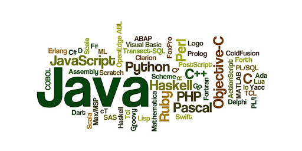

Założenia Projektu
Projekt zakładał stworzenie wpełni funkcjonalnej strony, która umożliwi poznać otaczające nas dzwięki. Dzięki temu będziemy w stanie odóżnić samochod od tira oraz trąbkę od skrzypiec. Od tąd gama cedór nie powinna sprawić ci żadnego problemu.
Dla kogo jest ta strona?
Strona jest dedykowana zaróno dzieciom w wieku przedszkolnym, jak i wszystkim którzy mają jakieś dysfunkcje, albo chcą się poprostu sprawdzić. Umożliwia ona rozwój słuchu, a także sprawdzenie swoich sił w internetowym pianinie.
Czy mam coś z tego?
Strona jest w pełni darmowa. Strona ma charakter czysto edukacyjny, więc nie znajdziemy tutaj żadnej reklamy. Właściciel storny nie czerpie z niej żadnych kożyści majątkowych. Wszytskie wykożystane streści pochodzą z internetu. Nagrania z youtube, a grafika z google grafika. Zakazane jest korzystanie oraz wykorzystywanie ze strony w innym celu niż jest pierwotnie przeznaczonym.

Wykorzystana Technologia
Strona została zrobiona w dość prosty sposób. Za cały mechanizm odpowiada dosłownie kilka funkcji. Całość została wykonana w taki sposób, aby późniejsza ewentualna reozbudowa o nowe funkcje lub elementy nie stanowiła żadnych kłopotów. Jeżeli teraz zdecydowalibyśmy się dodać nową sekcję o nazwie "Wielcy znani muzycy", to mysielibyśmy dodać ją ręcznie w HTML. Skolei w pliku JS, zakładając, że ma się zachowywać jak poprzednie elementy, to dodamy jedynie w tablicy w odpowiednim miejscu aders do naszego pliku .mp3.
